一、什麼是 VirtualBox？
VirtualBox 是一套由 Oracle 公司所開發的免費且中文化的虛擬機器 ( Virtual Machine ) 軟體，目前已經發表 6.0.0 版，安裝 VirtualBox 之後，可以在你的電腦新增多部的虛擬機器，在虛擬機器中可以安裝不同的作業系統，例如：Windows、Linux、Solaris、BSD、IBM OS/2 等，當然也可以安裝任何的軟體，就好像在使用實體電腦一樣，VirtualBox 很適合用來練習硬碟的分割與調整、作業系統和軟體的安裝與測試，不管你在虛擬電腦做任何的測試，完全不會影響電腦的正常運作。
二、安裝 VirtualBox
官方下載網址：https://www.virtualbox.org/wiki/Downloads
本文章是將 VirtualBox 安裝在 Windows 系統，所以點選 Windows hosts
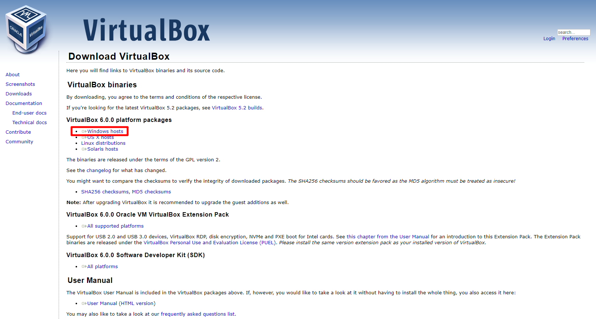
執行安裝檔
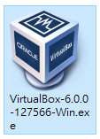
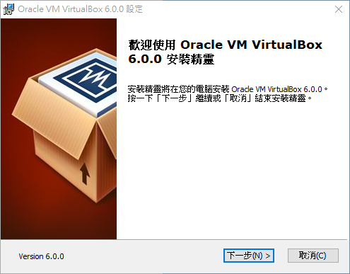
設定安裝路徑
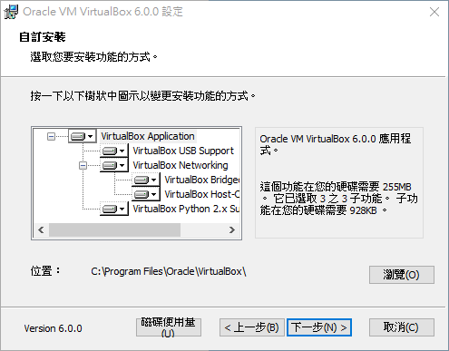
win 10 的快速啟動列預設是被封印的要另外開啟，如果沒有要使用可以把勾選取消掉，其他選項按照個人需求自行勾選
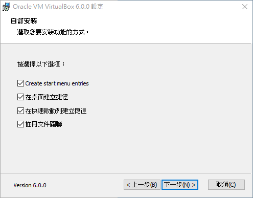
在安裝 VirtualBox 的時候網路會暫時中斷，點選是
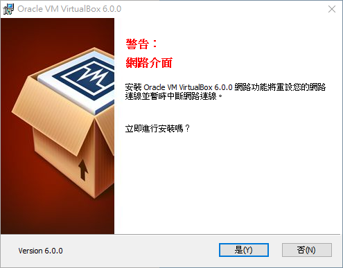
執行安裝
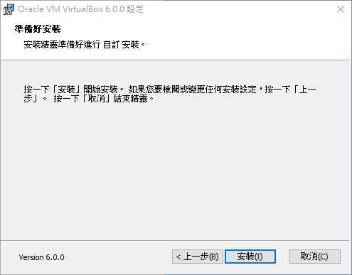
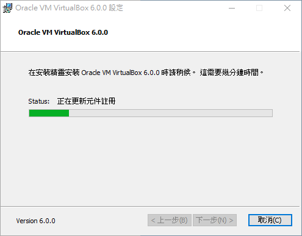
安裝完後啟動，自行勾選
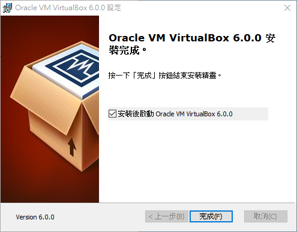
啟動畫面
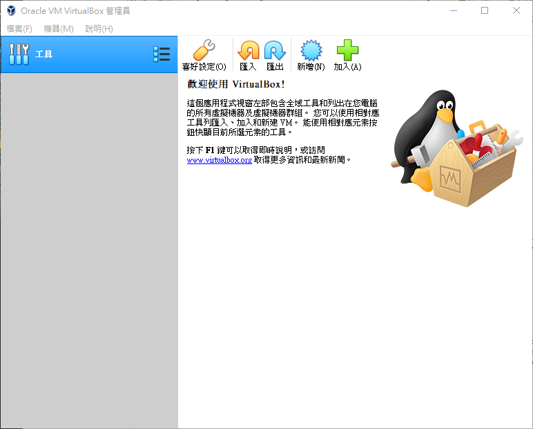
三、安裝 USB 2.0 與 USB 3.0 的擴充包
點選 All supported platforms，下載支援 USB 2.0 與 USB 3.0 的擴充包
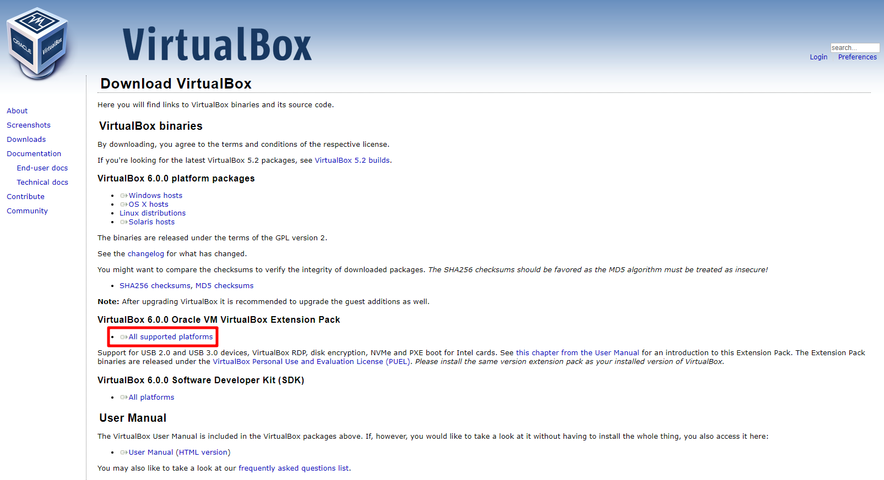
執行安裝包
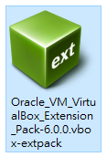
點選安裝
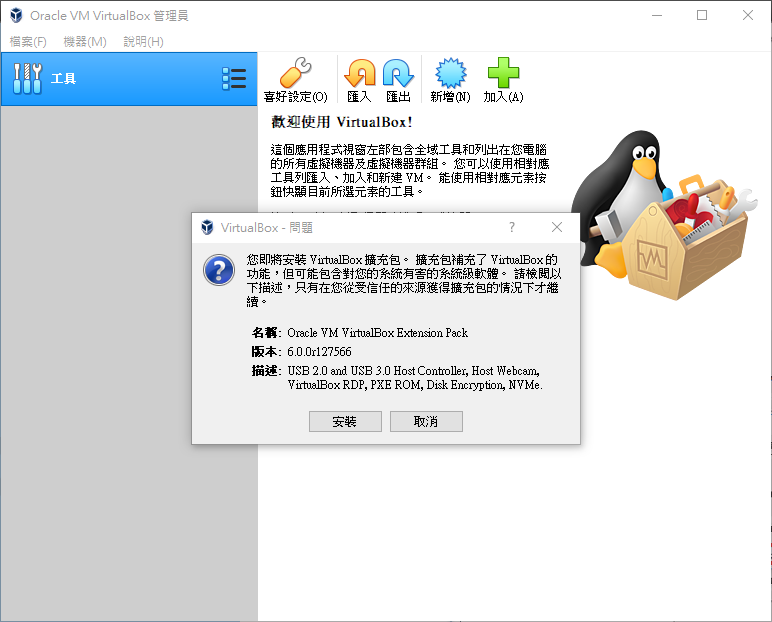
條款同意
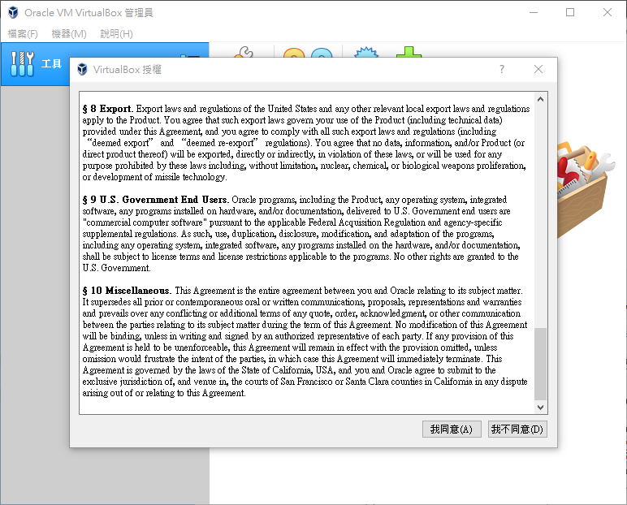
點選確定後完成
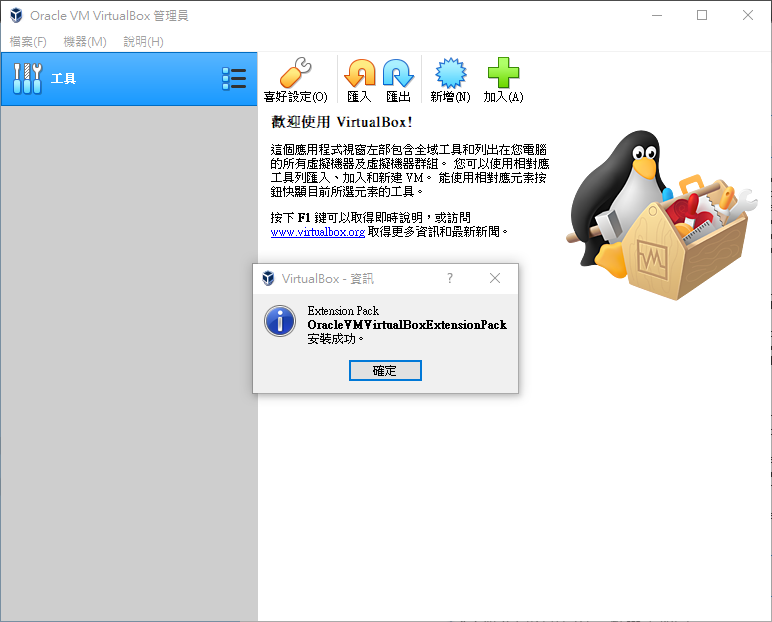
四、設定
點選檔案 → 喜好設定
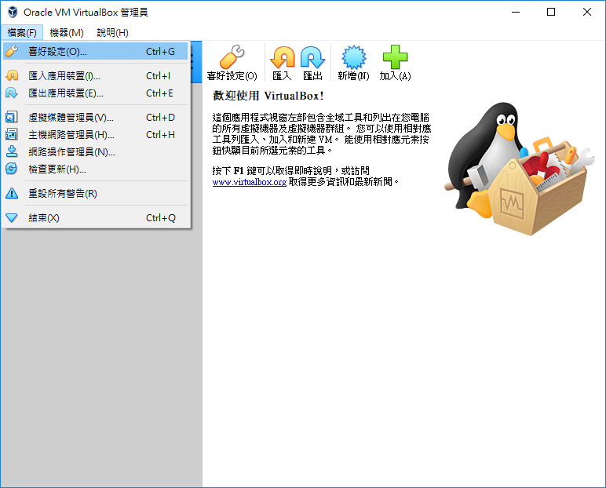
在一般 → 機器預設資料夾 → 其它選項，可以更改預設機器資料夾的儲存位置，預設路徑在 C 磁碟，建議將路徑改到空間比較大的磁碟
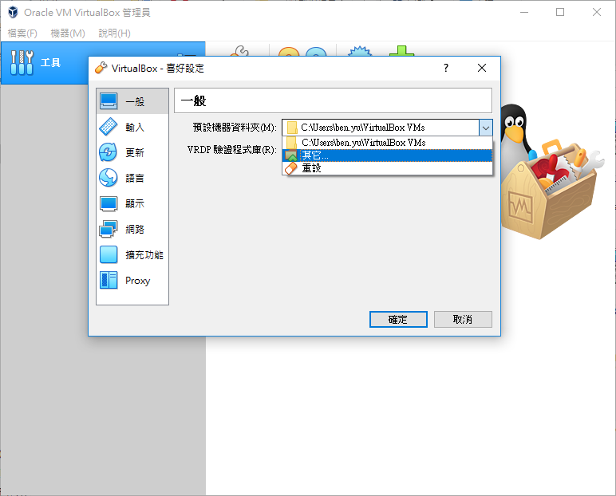
在輸入 → 虛擬機器，可以更改按鍵組合
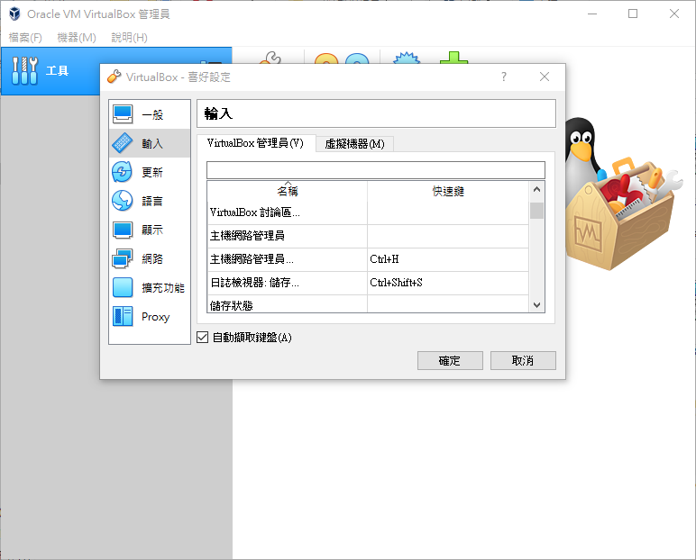